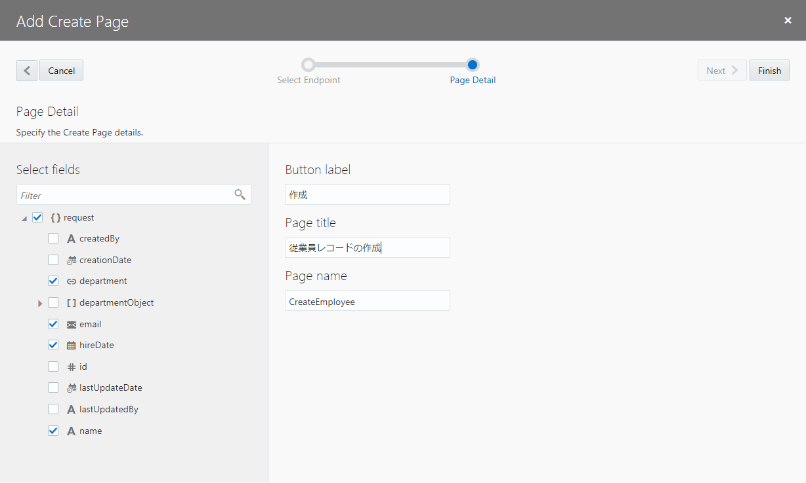
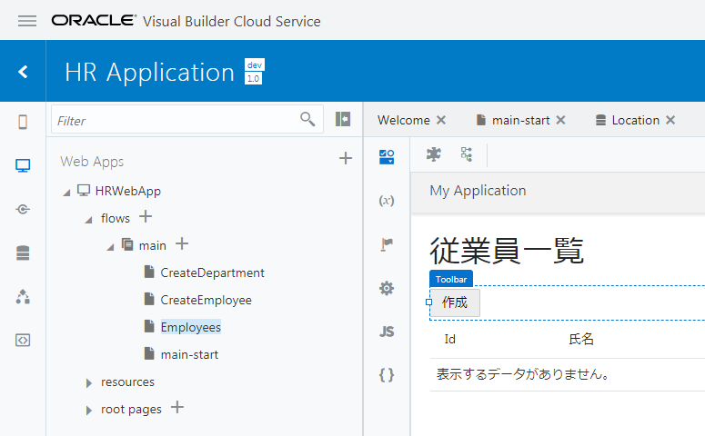
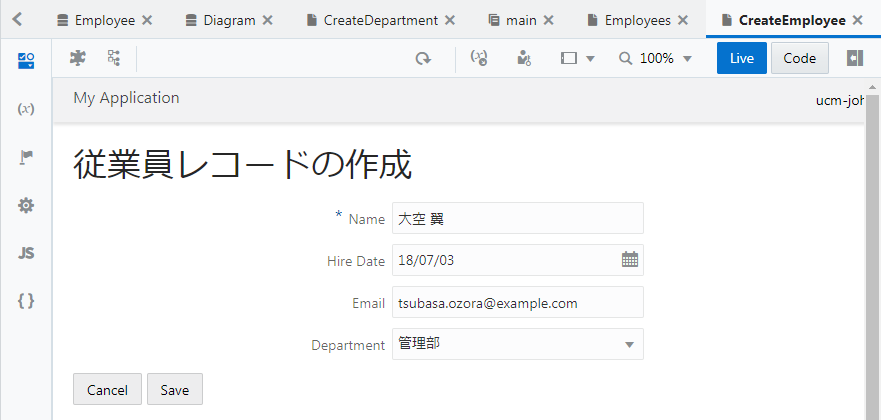
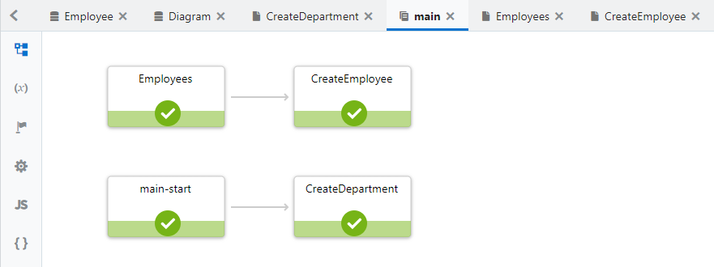
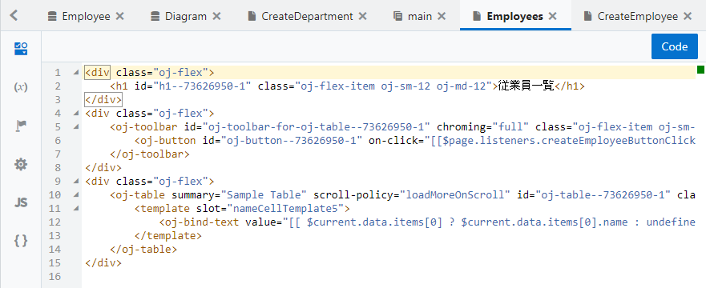

Oracle VBCS はじめての Web アプリケーション開発 > パート3: データを参照・作成するページの作成
Employee のレコードを作成するページの追加
ページの作成
【ステップ 1】
『Employee のレコードの一覧を表示するページの追加』 で作成した Employees（従業員一覧）ページをアプリケーション・デザイナの
 （Designer）タブ・ページで開きます。
（Designer）タブ・ページで開きます。
追加された Table コンポーネントのプロパティ・インスペクタで
 （Quick Start）タブを開き、「Add Data」 をクリックします。
（Quick Start）タブを開き、「Add Data」 をクリックします。
【ステップ 2】
「Add Create page」 ダイアログ・ボックスが表示されます。 「Select Endpoint」 ページでは、REST API のエンドポイントを選択します。 「Business Objects」 → 「Employee」 ノードの下の 「POST /Employee」 が選択されていることを確認したら、 「Next」 ボタンをクリックします。
【ステップ 3】
「Add Create page」 ダイアログ・ボックスの 「Page Details」 ページでは、レコードを作成するフォームで値を指定する Employee ビジネス・オブジェクトのフィールドを選択します。 「name」、「hireDate」、「email」、「department」 をチェックします。

画面右側の 「Button label」 テキスト・フィールドの値を 作成 に変更します。
次に、「Page Title」 テキスト・フィールドの値を 従業員レコードの作成 に変更します。
「Page name」 はデフォルトの値（CreateEmployee）を使用することにして、 「Finish」 ボタンをクリックします。
【ステップ 4】
「Add Create Page」 ダイアログ・ボックスで 「Finish」 ボタンをクリックすると、main-start ページの Heading コンポーネントと Table コンポーネントの間に Toolbar コンポーネントが追加されています。 Toolbar コンポーネントの中には、「作成」 ボタンが配置されています。

また、アプリケーション・ナビゲーション・エリアの Web Applications タブ・ページで 「HRWebApp」 → 「flows」 → 「main」 ノードを展開すると、 「CreateEmployee」 ページが追加されています。
作成したページの動作確認
【ステップ 1】
アーティファクト・ブラウザで 「CreateEmployee」 ページをクリックし、アプリケーション・デザイナで開きます。
【ステップ 2】
画面右上にある 「Live」 ボタンをクリックして、ライブ・モードを有効します。 適当なデータを入力して、「Save」 ボタンをクリックします。

【ステップ 3】
「Save」 ボタンがクリックされると、ページ・フロー main がオープンし、アプリケーションのページ・フローをビジュアルに表示します。

【ステップ 4】
アーティファクト・ブラウザで 「Employees」 をクリックし、Employees（従業員一覧）ページをアプリケーション・デザイナの
 （Designer）タブ・ページで開きます。
（Designer）タブ・ページで開きます。
Employees ページをアプリケーション・デザイナで開きます。 テーブルにこのセクションで追加したデータが表示されない場合は、 （Reload Page）ボタンをクリックして、ページの再読み込みを実行します。

【ステップ 5】
画面右上にある 「Code」 ボタンをクリックすると、Employees ページの HTML ソースを確認したり、直接編集したりすることができます。

div タグや h1 タグなど通常の HTML タグのほかに、oj-table など、名前が oj- で始まるタグが使用されています。
oj- で名前が始まるタグは、 Oracle JavaScript Extension Toolkit (JET) が提供するコンポーネントです。
もう一度 「Code」 ボタンをクリックして、デザイナ・ビューに戻ります。